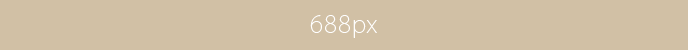
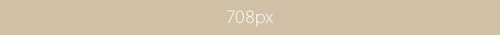

h1テキスト入力場所です。titleタグの次に重要なので念入りに考えてワードを盛り込みましょう。
ホームページビルダーをご利用の方へ（重要）
ビルダーでテンプレートを開いた場合、htmlの１行目を勝手に変換されてテンプレートが崩れる原因になるのでこちらを必ずお読み下さい。もしご自身のパソコンで見た時に正常に見えても、他の環境で崩れて見える場合があります。
もしこのページをビルダーで開いて見ている場合、既にhtmlの１行目が自動変換されている可能性大です。修復方法についても上記ページをご覧下さい。
文字色やサイズなどの設定は…
梱包のstyle.cssで行います。メモ帳で編集できます。詳しい説明も書いていますのでお読み下さい。
テンプレートの使い方
■titleタグの設定はとても重要です。念入りにワードを選んで適切に入力しましょう。
まず、htmlソースが見れる状態(メモ帳などで開いてもOK)にして、
<title>シンプル系ホームページテンプレート simple17</title>
を編集しましょう。
続いて、下の方の
Copyright© 2010 サンプルウェブサイト[…省略…]
も編集します。「2010」部分はその年その年にあわせて変更していって下さい。
■h1タグを変更しましょう。
HP最上段にあるh1タグのテキストを変更しましょう。titleタグの次に重要なワードです。
■metaタグを変更しましょう。
htmlソースが見える状態にしてmetaタグを変更しましょう。今はあまり重要視されていませんがSEO対策の一環です。
ソースの上の方に、
content="ここにサイト説明を入れます"
という部分がありますので、テキストをサイトの説明文に入れ替えます。検索結果の文面に使われる場合もありますので、見た人がよく分かるような説明文を簡潔に書きましょう。
続いて、その下の行の
content="キーワード１,キーワード２,〜〜〜"
も設定します。ここはサイトに関係のあるキーワードを入れる箇所です。10個前後ぐらいあれば充分です。キーワード間はカンマ「,」で区切ります。
ロゴ画像について
ロゴについては、baseフォルダに入っているlogo.gif画像の上に文字をのせ、imagesフォルダに上書きします。これで現在のロゴ画像と置き換わります。上記のサンプルロゴと同じ加工を各500円で承っております。
■gif画像がうまく編集できない場合
ロゴの土台画像はgif形式になっています。そのまま画像ソフトで文字のせすしようとると、色数が限定されてしまうので、まずは増色設定をしてから文字をのせてみましょう。増色設定用のメニューは画像ソフトにより異なるので、分からない場合は画像ソフトのサポートに問い合わせてみましょう。
背景画像（HPのボックスの外の左下のイメージ写真）について
bodyタグの背景画像として左下に固定配置させています。スクロールしても画像が常に見えるのが特徴ですが、あまり濃い色の画像を置いてしまうと、上に文字が重なった場合に読みにくいので注意が必要です。
画像を変更したい場合は、body_bg.jpgにしてimagesフォルダに上書きして下さい。後は、画像の背景色にあわせて、style.cssのbody項目内のbackground-colorを変更して下さい。
ヘッダー画像（上のイメージ写真）について
自分で画像を用意する場合、幅716px、高さ136pxにし、画像ファイル名を「mainimg.jpg」にしてimagesフォルダに上書きして下さい。現在の画像と置き換わります。
左側のメインメニューについて
リストタグでできています。html側で見ると以下の通り。
上をコピーして左右ブロック内に追加すればいくつもサブメニューのブロックを追加する事ができます。テーマが異なる場合などメニューを分けて使いたい場合にご利用下さい。
Windows XP以前のパソコンや、メイリオフォントが搭載されていないパソコンをご利用の場合、メニュー内のテキストを幅ギリギリまで使わないように注意して下さい。他の環境で最後のメニューの文字が途中から消えてしまう場合があります。
当ブロックについて
■当ブロックの見出しについて
当ブロックの一番上にある「ホームページビルダーをご利用の方へ（重要）」などの見出しは以下のようにh2タグで囲めばOKです。
■当ブロック内のテキストは…
段落タグ<p>で囲みましょう。余白が自動で反映されます。
■当ブロック内に画像を置く場合…
この場所（#mainブロック内のmainbox内の段落タグ内）内なら、幅688px（↓）まで。

この場所だけど、段落タグの外に置くなら幅708px（↓）まで。
ちなみに、このブロックの外も使えます。当ページの一番下の「720px」画像参照。
トップページの「What's New」コーナーの使い方
定義リストタグでできています。h2の見出しを含めた１ブロックをhtmlで書くと以下の通りです。
<dl>タグにclass指定で"new"とする事でインラインフレーム(iframe)風のボックスが出来上がります。iframeと違い、実際に同じhtmlファイル内に記載されているのでSEO的にも有効かと思います。
<dt>には日付、<dd>には内容を書きます。ボックスの大きさなどはstyle.cssで変更して下さい。
テンプレートの編集サービスについて
ロゴやメニューの画像加工やhtmlコーディング、テンプレートのテーマカラー変更やプログラム設置など、テンプレートに関する様々なサポートも承っております。また、当テンプレートのPSD(Photoshop)ファイル販売も行っております。
詳しくはこちらのテンプレート編集ページをご覧下さい。
このボックス（mainbox）は独立して複数作る事ができます。
おまけ
テンプレートとセットのバナーも準備しました。文字なし土台がbaseフォルダに入っていますのでご活用下さい。当サイトでも文字のせ代行承っておりますのでお気軽にご相談下さい。